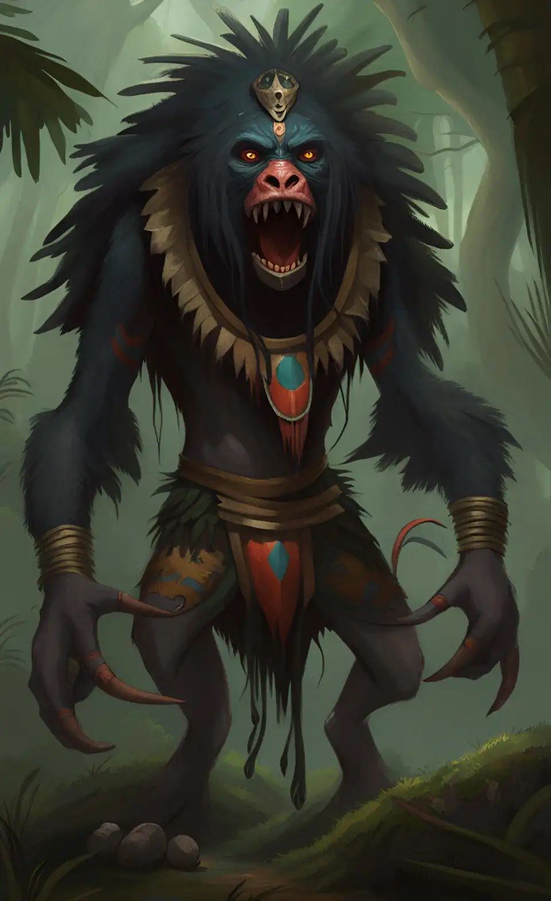
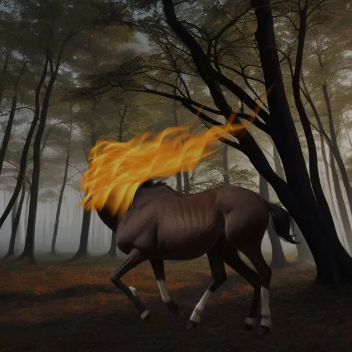
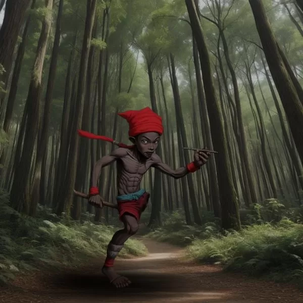

Folclores do Acre
1. O Mapinguari
O Mapinguari é uma criatura mítica da cultura acreana, descrita como um gigante peludo que habita as florestas. Segundo as lendas, ele é um guardião da floresta e protege os animais e as plantas. Acredita-se que o Mapinguari emita um grito ensurdecedor que pode ser ouvido a longas distâncias, o que o torna um símbolo de respeito pela natureza. Muitas histórias envolvem encontros com o Mapinguari, geralmente trazendo uma mensagem de conservação ambiental.
2. A Mula Sem Cabeça
A Mula Sem Cabeça é uma figura clássica do folclore brasileiro, especialmente no Acre. Ela é uma mulher que, devido a uma maldição, se transforma em uma mula sem cabeça e, durante a noite, galopa pelas estradas. A lenda diz que quem a vê corre grande perigo, pois ela pode perseguir as pessoas e causar terror. A história serve como um aviso sobre as consequências de ações consideradas imorais, refletindo valores sociais e comportamentais da cultura local.
3. O Saci-Pererê
Embora o Saci-Pererê seja um personagem folclórico mais conhecido em todo o Brasil, ele também tem suas variações no Acre. Representado como um menino de uma perna só, com um gorro vermelho, o Saci é famoso por suas travessuras. Ele gosta de pregar peças nas pessoas, como esconder objetos ou fazer com que os animais se comportem de forma estranha. O Saci é considerado um espírito protetor da natureza e um símbolo da cultura popular brasileira, representando a esperteza e a astúcia.